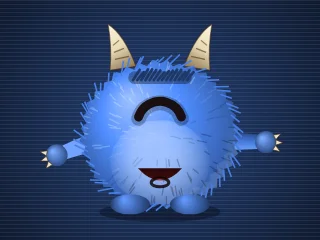
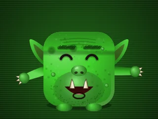
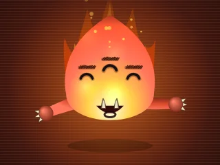
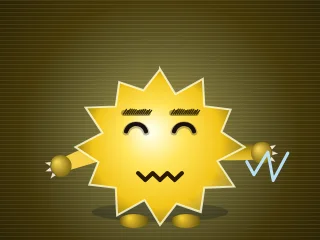
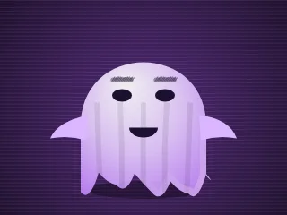
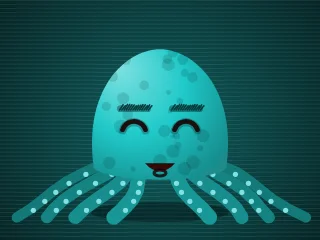
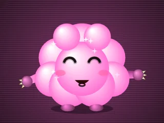

Drei-Personen-Schach
Drei-Personen-SchachDie Computergegner
Acht KI-Gegner mit Charakter: Jeder sieht anders aus, klingt anders und spielt anders. Sie freuen und ärgern sich auf den Monitoren, verhandeln, schmieden Bündnisse, verraten sie auch mal – und du kannst mit ihnen reden.
So wählst du deinen Gegner
- Im Startfenster stellst du für jeden Platz ein, ob dort ein Mensch oder der Computer spielt. Beim Computer wählst du die Stärke (leicht, mittel, stark, Meister) und daneben, welcher Gegner spielt.
- Stärke und Charakter sind unabhängig: Ein leichter Flammo stürmt genauso los wie ein starker – er übersieht nur mehr.
- Jeder Gegner spielt in allen vier Varianten: Drei-Personen-Schach, Schach der 6 Reiche, Schach ohne Grenzen und Sternschach.

👾 Blubbo
Ein flauschiger Zyklop mit Hörnern
Charakter: Gutmütig, überschwänglich, kindlich verspielt, bietet gern Bündnisse an und verrät sie auch mal mit einem Engelsgesicht.
Spielstil: Verspielt und unberechenbar, schnappt gern Figuren.
„Juhuu!“ · „SCHACH! Hihi!“ · „Blubbo ist der Größte!“

👹 Grumbo
Ein brummiger Oger mit Hauern und Warzen
Charakter: Mürrisch, wortkarg, ehrlich und stur, hält Abmachungen, vergisst aber nie ein Unrecht.
Spielstil: Vorsichtig und stur, deckt alles ab, schlägt erst, wenn es sicher ist.
„Hmpf. Gut.“ · „Schach. Zitter!“ · „Wie erwartet.“

🔥 Flammo
Eine zappelige Flamme mit drei Augen
Charakter: Hitzköpfig, zappelig, angeberisch, rachsüchtig, blufft gern.
Spielstil: Hitzköpfiger Angreifer, stürmt auf die Könige los und nimmt Verluste in Kauf.
„Zack!“ · „SCHACH! Feuer frei!“ · „Sieg in Flammen!“

⚡ Zappo
Ein knisterndes Blitzwesen
Charakter: Blitzschnell, nervös, redet ohne Punkt und Komma, ändert ständig seine Meinung, liebt Wortspiele mit Strom und Blitz.
Spielstil: Blitzschneller Taktiker, liebt Schachgebote und Überfälle.
„Bzzzt!“ · „SCHACH! Bzzzt!“ · „Hochspannung – Sieg!“

👻 Spuki
Ein Gespenst im wehenden Laken
Charakter: Geheimnisvoll, flüstert gern, spricht in Rätseln, unberechenbar, verrät Bündnisse am liebsten im dramatischsten Moment.
Spielstil: Hinterlistig, jagt am liebsten den Schwächsten.
„Huhuu – gefangen!“ · „Schach… huhuu!“ · „Huhuu – gewonnen!“

🐙 Kraki
Eine Krake mit acht wogenden Armen
Charakter: Gemütlich, listig, plant langfristig, hält Verträge genau ein, redet gern übers Meer.
Spielstil: Geduldiger Stratege, baut eine starke Stellung in der Mitte auf.
„Acht Arme, ein Fang!“ · „Schach! Ich halte dich fest!“ · „Sieg aus der Tiefsee!“
☀️ Sonno
Eine strahlende Sonne – bei guter Laune mit Sonnenbrille
Charakter: Fröhlich, warmherzig, ein bisschen eitel, sieht alles positiv, schließt gern Freundschaften und vergibt schnell.
Spielstil: Ausgeglichen, verbündet sich gern gegen den Führenden.
„Sonnenschein!“ · „SCHACH! Blendend!“ · „Ein Sieg wie ein Sommertag!“

☁️ Fluffi
Ein Wölkchen aus Zuckerwatte
Charakter: Zuckersüß und verschmust nach außen, innen berechnend; tut harmlos, blufft gern und verrät mit Unschuldsmiene.
Spielstil: Berechnend und gierig, sammelt Material ohne Risiko.
„Kuschelig erwischt!“ · „Schach! Ganz zuckersüß!“ · „Zuckersüßer Sieg!“
Mit den Computergegnern reden
- Chat: Schreib ihnen einfach, zum Beispiel „Grumbo, lass uns gemeinsam Rot angreifen!“ oder „Fluffi, wie geht es dir?“. Sie antworten in ihrem Charakter.
- Sprechen: Mit „🎤“ hören sie dir zu – sprich sie am besten mit Namen an.
- Bündnisse: Sie bieten Bündnisse gegen den Führenden an, nehmen deine Angebote an oder lehnen ab – und manche verraten dich im dümmsten Moment.
- Lernen: Auf Wunsch merken sie sich, wie du spielst, und stellen sich darauf ein.